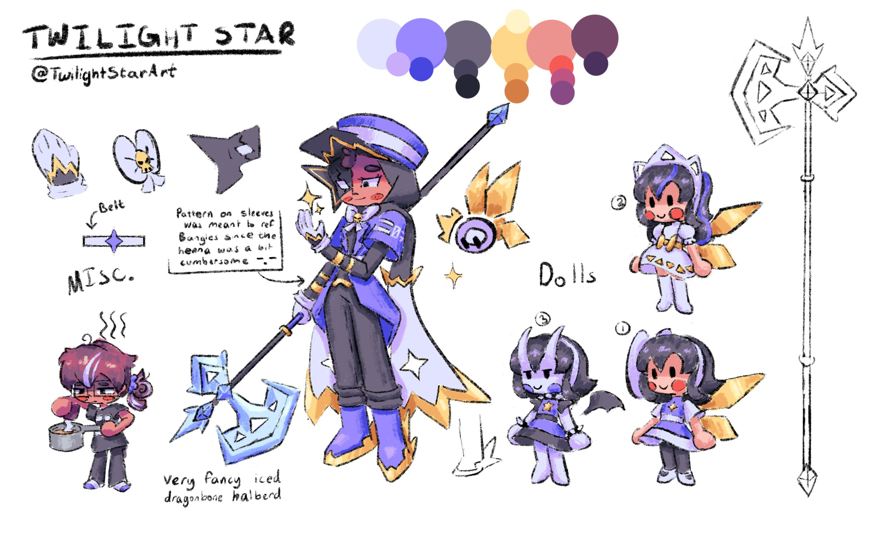
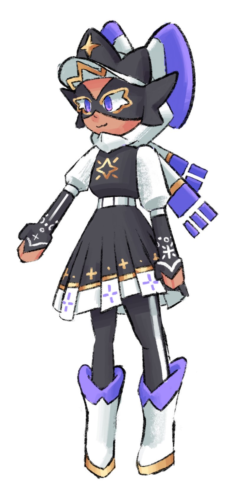

This was originally a test blog to make sure the blogs were functional with this website. However, I don't want to remove this post in fear of breaking something, so instead I'll make this a rant about Twilight's design and how it's developed.
(For clarity, “Twilight” also refers to the character in my pfp, who has her own backstory and lore at this point.)
The first iteration of Twilight was made when I wanted my own Minecraft skin, when I started playing on RLcraft's now Alpha Server in early 2020. I added the bow offhandedly since I saw a lot of girl skins on SkinDex had bows, though it ended up becoming one of the key design elements I wanted to keep for Twilight in every redesign.
Originally when I made this skin, I made it with the intent of being “just a minecraft skin.” After a certain point, I started drawing this design and using it as my profile picture over discord, and it started becoming what I presented myself as. However, since this design was originally made “as a minecraft skin,” there were a couple of details that were inaccurate to me, that didn't quite make sense to be inaccurate. Regardless, Twi's main design remained mostly the same up until when I left during late 2022/early 2023.
During the period I was gone, I fully intended to abandon TwilightStar as an alias, and by extension abandon Twilight's character and design. Though instead at some point, I wanted to redesign Twilight to be more accurate to me. I wanted a way for both the original and the newer designs to logically coexist. I eventually settled on Twilight using a fairy ring often and “hiding” inside a doll with the original design, and puppeting it with magic. The fairy-in-a-doll aspect was inspired by the Twilight teddy bear variant StarArtsy had made for T&B shortly before I had left, as well as the amount of time I spent with a fairy ring on the Alpha Server. The white markings on the sleeves were intended to resemble Mehndi. I'm not all that much a fan of this design, as it's very busy. Though out of all the designs up until now, I like its atmosphere the best. Later iterations of her design couldn't really capture the “adventure” vibe that I quite liked. Around this point, the dress outfit also became a sort of “casual”/PJ outfit for Twilight (for mainly if she was alone or with close family).
While I did intend on abandoning Twilight, I ended up returning fully right before the start of 2024. In February of that year, I redesigned Twilight again. This version didn't really have any direction beyond “combining cute outfits I saw on Pintrest.” I don't really like it XD its super nonsensical, removes the mendhi, and the hijab looks like pigtails. I don't really like the pigtails!
Almost immediately I realized how UTTERLY TERRIBLE that design was and started throwing around ideas for a redesign (again). These next couple of designs, I tried to go with a more royal theming, as part of the story I was making was vaguely to do with Twilight being somehow a royal fairy (taking from T&B lore for inspiration) and also having a very large mana pool. I still haven't quite worked out the logic of the story, but it's what I've been going with. I also really liked the crown design in the cap from Leon's design from Pokemon Sword and Shield, so the next couple of designs I stole- er, I mean borrowed that little detail. (I don't entirely know how or why I started implementing the masks. Just looked cool ig??) While this version has problems, I'm somewhat fond of it
I ended up sticking with this suit outfit for quite some time in comparison to the others. I never ended up using the princessy doll or the demon doll designs though. The demon doll I was considering experimenting with a side story with another character, but I ended up scrapping. (there is also a little tired me in the bottom left corner) (I am making chai) (full time engineering school is fun)
This one didn’t last long. I liked the crown and the new mask, but its a little busy again. I did end up making a PNGTuber with this design (at the time of writing, I still use this when I stream!)
Recently, I made a sketch I shared in a group chat for a newer design of Twilight. While it does remove the cap I was trying to hold onto for the previous few designs, this outfit kind of captured the “adventurey” vibe that I missed from the first redesign. This current iteration, I decided I would go with multiple simultaneous designs that would be used depending on the situation. Sure maybe it's a bit odd to have so many variants, but I can do what I want! For variant 2, I wanted to combine the formal suit outfit with some of the improvements of the newer black dress outfit. Variant 3 Ive been using for a while at this point, but never got around to including it in a reference sheet. I'm quite happy with how these newest outfits turned out! Variant 2 I was struggling with where the colors should go, but I think I've done it decently.